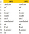

Early recognized treaties with American Indian nations
The Oklahoma State University Library’s Indian Affairs: Laws and Treaties Internet site was developed to provide a digital collection of the final texts of 366 of the 375 American Indian treaties recognized by the United States Department of State. The remaining nine documents are provided in this compilation, to complement the Oklahoma State resource.
You say cranberry and I say cramberry, let's call the whole thing off: A lexicon of the recognized American Indian treaties
Two lexicon corpora of 375 acknowledged American Indian treaties — one made from those transactions created with the federal government (N = 368), and another from those documents formed during the earlier British occupation (N = 7) — were generated with TokenX, a text visualization and analysis tool. Resulting frequency tables for these families of instruments are included, along with commentary on these laws of the land.
Charles J. Kappler — A life beyond Indian Affairs: Laws and Treaties
Charles J. Kappler (1868–1946) is known primarily for his compilation Indian Affairs: Laws and Treaties. His contributions as an employee of the federal government, his role as an attorney specializing in federal Indian law, and his influence on the development of this jurisprudence also warrant recognition. These and other aspects of his life are presented to demonstrate the wide range of his accomplishments.
The Treaty of Fort Laramie with Sioux, etc., 1851: Revisiting the document found in Kappler's Indian Affairs: Laws and Treaties
The Treaty of Fort Laramie with Sioux, etc., 1851 was an important transaction formed by the federal government with a number of prominent American Indian tribes of the Great Plains. Its creation and provisions were a demonstration of the growing need for less animosity among the tribes themselves, in part to yield increased security for an ever-growing flow of settlers into the western United States who traversed in the process the tribes' historical lands. However, over the years, a true version of the final transaction — reflecting intervention by the Senate after the original signing — has never been published. A proposed correct text is presented here.
As long as grass shall grow and water run: The treaties formed by the Confederate States of America and the tribes in Indian Territory, 1861
During the summer and fall of 1861, the Confederate States of America created a series of treaties with the tribes in Indian Territory. These transactions were recorded in The Statutes at Large of the Provisional Government of the Confederate States of America as the law of the land, just as similar federal transactions appeared in the U.S. Statutes. The texts of those nine instruments – and their Statutes page images – are provided here.
I forbid: Presidential vetoes and America Indian affairs, 1789-2000
Between the years 1789 and 2000, nineteen United States Presidents vetoed 114 bills or resolutions that were related to American Indian affairs. These executive actions are identified here, and supporting Congressional documents for each transaction are included. A brief history of Presidential veto power and activities is presented.
"In order to organize the Government of the Indian Territory. . .": Comparing variants of the 1870 Okmulgee Constitution
The Five Civilized and other tribes within the Indian Territory initiated a series of council meetings in 1870 to deal with new federal stipulations and treaties following the Civil War. The so-called Okmulgee Constitution was created to provide a model for a full-fledged Indian state to replace the Territory. Fourteen variants of that document and of a revised rendition were examined in this study, in terms of their variability as quantified by Levenshtein's edit distance algorithm.
Insights from editions of The Annual Register regarding later variants of the Royal Proclamation of 1763: An application of Levenshtein’s edit distance metric
King George III's Royal Proclamation of 1763 provided an operational definition of "Indian country" in North America and set guidelines for the administration of, and inherent sovereignty within, those tribal lands. The effects of these declarations shaped the evolution of Indian affairs in both Canada and the United States; their influence has endured to this day. The texts of variants of that pronouncement – among editions of The Annual Register and related publications – are analyzed with Levenshtein's edit distance algorithm.
The quantification of a forced convergence of similar texts: The 1870 and the 1875 Okmulgee Constitution and Levenshtein’s edit distance metric
The Okmulgee Constitution, created in the Creek capital of the Indian Territory in December 1870, provided a model for a new full-fledged and federally supported Indian state to replace the Territory. In a previous study, the variants of that document's text from the official and unofficial record were examined through the application of Levenshtein's edit distance algorithm. This analysis considers the similarity of the 1870 Constitution and a revision from 1875 through a series of forced convergence maneuvers that more closely aligned the texts of these two already highly correlated instruments. The Levenshtein procedure was employed to quantify this integration.
The Indians of the Northern and Southern Districts of North America: Levenshtein comparisons of the tribe lists from the 1764 "Plan for the future management of Indian affairs"
The Northern and Southern Districts of the British government in America contained tribes of Indians that were specifically enumerated prior to the preparation of the 1764 Plan for the future management of Indian affairs. That Board of Trade policy reassigned the responsibility for Indian affairs to the imperial government, rather than leaving it to be mediated by the individual colonies. Fourteen variants of those lists, from official and public sources, were compared with Levenshtein’s edit distance algorithm to assess similarity and provenance.
The Treaty of Waitangi, 1840: A Levenshtein edit distance analysis of English language variants
 The British, in their worldwide program of colonization, consummated treaties with the
indigenous peoples of North America, Africa, Asia, and the Far East and Pacific in a
process to administer these acquisitions. The Treaty of Waitangi, 1840 is the primary
document illustrating this behavior in New Zealand but, over time, variants of this
important instrument have appeared. A text analysis of forty-three of these renditions
was performed by applying Levenshtein’s edit distance algorithm.
The British, in their worldwide program of colonization, consummated treaties with the
indigenous peoples of North America, Africa, Asia, and the Far East and Pacific in a
process to administer these acquisitions. The Treaty of Waitangi, 1840 is the primary
document illustrating this behavior in New Zealand but, over time, variants of this
important instrument have appeared. A text analysis of forty-three of these renditions
was performed by applying Levenshtein’s edit distance algorithm.
The power of names: A Levenshtein analysis of the text of the 1620 Mayflower Compact and of its signatory list, in conjunction with the Conference and Agreement Between Plymouth Colony and Massasoit, Wampanoag Sachem, 1621
Variants of the 1620 Mayflower Compact frequently excluded the names of the forty-one signatories of that accord, yet for those instruments that furnished this list, the spellings were anything but consistent. This variance was also evident in the few references to the appellations of the Mayflower participants found in the 1621 Conference and Agreement Between Plymouth Colony and Massasoit, Wampanoag Sachem. In particular, Levenshtein edit distance analyses assessed these Compact name disparities and the texts of that manifesto, and examined the provenance of its later renditions. A strong correlation between observed pairs of text and signatory list errors was also found.
Kappler’s map: The Platte River image from the Treaty with the Pawnee — Grand, Loups, Republicans, etc., 1848
In the second volume of his Indian Affairs: Laws and Treaties collation, Charles J. Kappler employed a map to denote the lands ceded by the Treaty with the Pawnee – Grand, Loups, Republicans, etc., 1848. This image, along with the instrument’s text, was taken from the Statutes at Large. The plat is distinctive in its status as the only map to appear in the volumes of the Statutes before 1907.
Johnson revisited: An extension of the Guide to American Indian Documents in the Congressional Serial Set: 1817-1899
In his Guide to American Indian Documents in the Congressional Serial Set: 1817-1899, Steven L. Johnson enumerated twenty-seven document collections in the American State Papers: Indian Affairs that were not also published, in whole or in part, in the U.S. Congressional Serial Set between the joint publishing years of 1817 and 1827. An additional nine instrument arrays were not counted in his tally of materials available in both of these references, or that appeared only in the American State Papers. This study examines Serial Set volumes in these and in subsequent years through 1994.
The deployment of the terms indigenous, aboriginal, and Indian(s) in the texts of international constitutions
Indigenous societies around the world are stepping forward to assert their place as an equal partner in their nation’s future. In many cases, these efforts have been undertaken in response to the development and the 2007 publication of the Declaration of the Rights of Indigenous Peoples, as endorsed by the United Nations Working Group on Indigenous Populations. Governments also have begun to reconsider their stance on the associated issues. The digital texts of 189 international constitutions – as offered by the Constitute Web site – were examined for occurrences of the four tokens indigenous, aboriginal, and Indian or Indians to yield country indices. Documents from forty countries were found to contain the term indigenous and seven possessed aboriginal (N uses = 320 and 19, respectively). The more familiar token Indian, or its plural, occurred 88 times in ten of these political affirmations.
Variants of the 1786 Ordinance for the regulation of Indian affairs: A Levenshtein analysis
In 1786, the Continental Congress instituted the two positions of Superintendent for the Northern and for the Southern District through the implementation of An ordinance for the regulation of Indian affairs. This mandate was a clear continuation of the superintendency model employed by the British during their reign to develop trade and a strong relationship with the tribes. The ordinance has been published over the ensuing years in various collations. In the process, text errors were introduced. Sixteen selected variants of this statement, from official as well as public sources, were compared with Levenshtein’s edit distance algorithm to assess similarity and provenance.
"Thence along the middle of said water communication into the Lake Huron”: Tracking text exclusion and incursion in Article 2 of variants of the Treaty of Paris, 1783
The texts of Article 2 of variants of the Treaty of Paris, 1783 were examined to understand the provenance of two passages that deviated from the boundary parameters found in official British and American copies of this document. Newspapers published in London, promptly brought to New York by the mail packet Lord Hyde, already exhibited the first fault. Afterwards, it is clear that a New York paper introduced a second inconsistency into this Article. The spread of these text mistakes into subsequent American renditions is discussed, as is the hypothesis that the British Foreign Office, in its initial distribution of the Paris text to London newspaper printers shortly after its arrival from the treaty negotiations, had induced the first text defect itself.
American Indian treaties before the courts
These links provide access to journal publications on court cases in various jurisdictions that have cited one or more of the 375 recognized American Indian treaties. The list of uncited treaties has diminished since the first two articles were produced. This change is noted in later federal ensembles and in the 2013 update:
- The absent American Indian treaties - 2013 update
- Treaties that have been cited before the United States Supreme Court
- Treaties found in opinions of the lower federal courts
- Treaties in appearances before the United States Courts of Claims
- Treaties referenced in State court actions
- Treaty cases within Indian Territory, 1896–1905
- Treaty citations before twelve Territorial courts, in the years 1846 to 1909
- Supplemental article and supplementary treaty citations from opinions of the federal, state, and territorial court systems